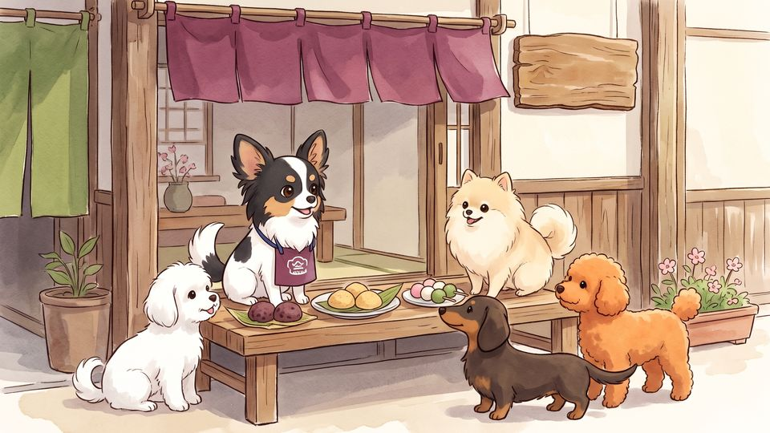

ちいさな犬たちの
ちいさなゲーム屋さん。
うちのパピチワ犬「おはぎ」と仲間の犬たちが主役のやさしいゲームを作っています。
犬が好きな人にもお子さんと一緒に遊ぶ人にも安心して楽しんでもらえるものをひとつずつ。

おしながき
おはぎと仲間の犬たちは、どの作品にも出てきます。
-

チワちくRUN
ちくわを集めながら障害物をよけてゴールへ。犬たちが駆けぬける 3D ランゲーム。
無料・広告なし・課金なしiPhone・iPad／PC -

くっつきチワだんご
うたた寝する飼い主のひざの上で犬たちが寄りそってお昼寝する落ちものパズル。
買い切り・広告なし（ブラウザ版は無料）iPhone・iPad／PC のブラウザ -

あみあみチワおさんぽ
三つ編みみたいにからまった犬たちのリードを入れかわりと持ちかえでほどくパズル。
無料（広告あり・広告の削除あり）iPhone・iPad／PC のブラウザ -

じりじりチワまて
「待て」のあいだにじりじり前に出る犬たち。「よし！」の瞬間、ぬけがけしたのはだれ？
無料（広告あり・広告の削除あり）iPhone・iPad -

チワ判子課長
チワワのおはぎ課長が、しっぽの先にぶら下げた判子で書類に判を押す。審査はきびしいねこ課長。
無料・広告なしPC のブラウザ（unityroom）

モデルはうちの犬「おはぎ」
おはぎはチワワとパピヨンのミックス（パピチワ）。黒い頭に白い線、大きな飾り耳、くるんとした白いしっぽがチャームポイントです。
仲間の犬たち「しらたま」「きなこ」「ようかん」「どらやき」「みたらし」「おもち」もみんな和菓子の名前。工房の名前もおはぎときなこから。
工房のおやくそく
お子さんと遊ぶ人にも犬と暮らす人にも気持ちよく遊んでもらうために。
安心して遊べる
どの作品も年齢区分は 4+、アカウント登録はいりません。チワちくRUN は無料で広告も課金もなし。広告のある作品も遊んでいる最中には出しません。
犬にやさしく
犬が傷つく場面は作りません。失敗しても犬はしかられず、しょんぼりするか「てへ」と笑うだけ。ゲームのちくわは本物の犬にはあげないでね。
個人情報を集めない
名前やメールアドレスを集めることはありません。くわしくは作品ごとのプライバシーの説明をどうぞ。
AI のことも隠さない
犬の 3D モデル（Meshy）、絵の一部（Google Gemini）、プログラム（Claude Code）に AI を使い、作者が選んで確認しています。音楽は人が作った曲です。